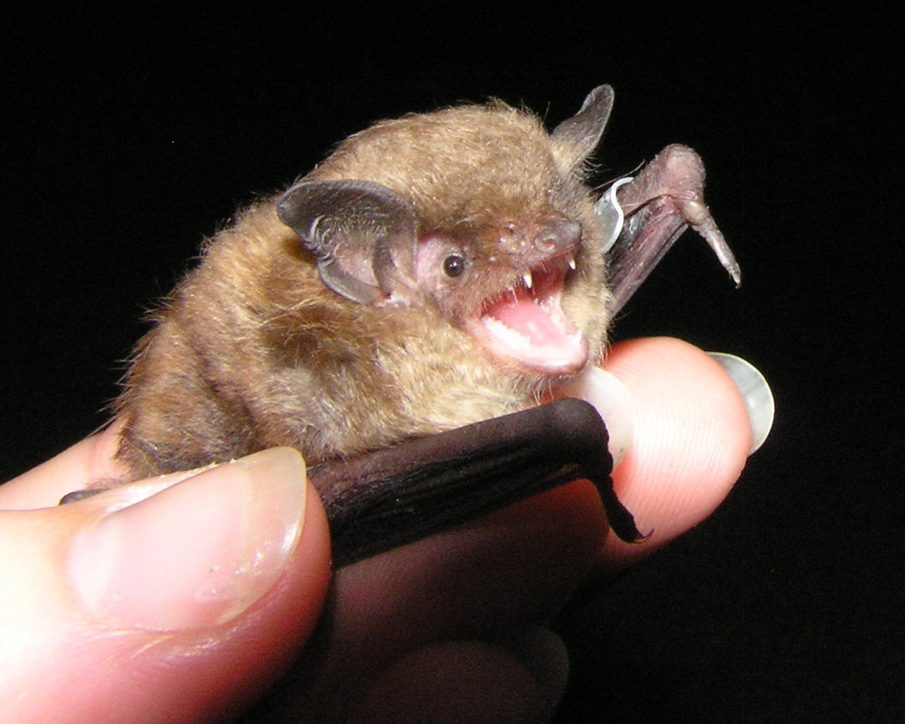
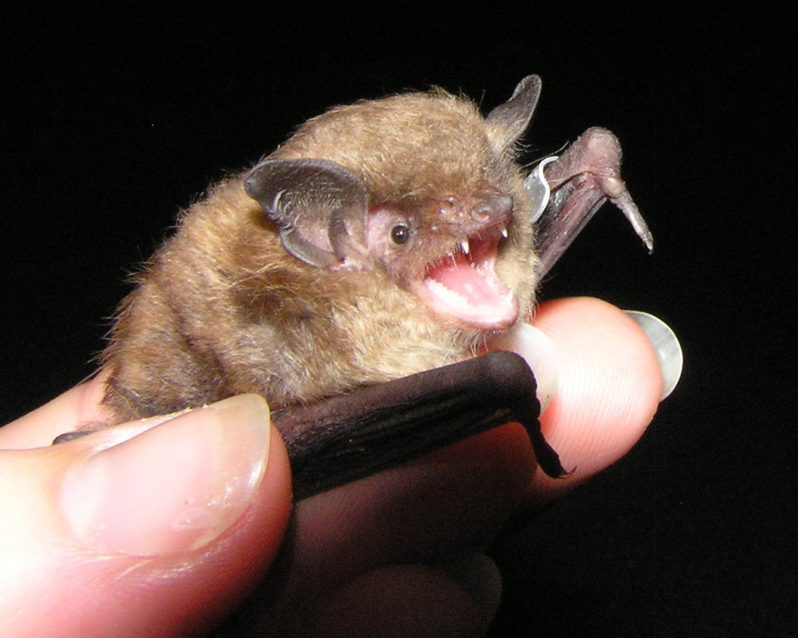

Wildlife
 

West Virginia's National and State parks are home to many endangered species of wildlife. The New River Gorge National Park and Reserve are home to Allegheny woodrats, Virginia big-eared bats, Indiana bats, and eastern small-footed myotis.